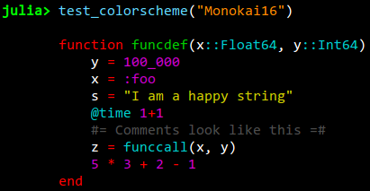
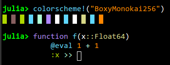
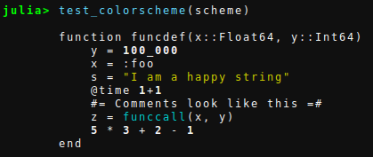
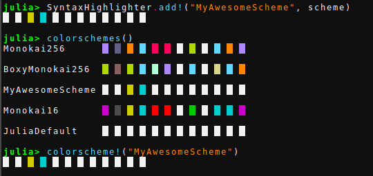
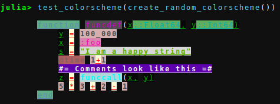

Syntax highlighting

The Syntax highlighting pass transforms input text in the REPL to highlighted text, highlighting keyword, operators, symbols, strings etc. in different colors. There are a few color schemes that comes with OhMyREPL but it is fairly easy to create your own to your liking.
Default schemes
The current default colorschemes that comes with OhMyREPL are
- "JuliaDefault" - the default Julia scheme, white and bold.
- "Monokai16" - 16 color Monokai
- "Monokai256" - 256 colors Monokai
- "Monokai24bit" - 24 bit colored Monokai
- "BoxyMonokai256" - 256 colors Monokai from here
- "TomorrowNightBright" - 256 colors Tomorrow Night Bright
- "TomorrowNightBright24bit" - 24 bit colored Tomorrow Night Bright
- "OneDark" - 24 bit colored OneDark
- "Base16MaterialDarker" - 24-bit Base16 Material Darker color scheme by Nate Peters
- "GruvboxDark" - Dark-mode variation of the Gruvbox color scheme by Pavel Pertsev.
- "GitHubLight", "GitHubDark" and "GitHubDarkDimmed" - GitHub's colorschemes, matching the VS Code themes
By default, "Monokai16" will be used on Windows and "Monokai256" otherwise. To test the supported colors in your terminal you can use Crayons.test_system_colors(), Crayons.test_256_colors(), Crayons.test_24bit_colors() to test 16, 256 and 24 bit colors respectively.
Preview
To see an example output of a colorscheme use test_colorscheme(name::String, [test_string::String]). If a test_string is not given, a default string will be used.

Activate
To activate a colorscheme use colorscheme!(name::String)

Creating your own colorschemes.
This section will describe how to create your own colorscheme.
Please refer to the Crayons.jl documentation while reading this section.
We start by loading the Crayons package and importing the SyntaxHighlighter and the ..
using Crayons
import OhMyREPL: Passes.SyntaxHighlighterWe now create a default colorscheme:
scheme = SyntaxHighlighter.ColorScheme()By using the function test_colorscheme we can see that the default colorscheme simply prints everything in the default color:

There are a number of setter function that updates the colorscheme. They are called like setter!(cs::ColorScheme, crayon::Crayon). The different setters are:
symbol!- A symbol, ex:symbolcomment!- A comment, ex# comment,#= block comment =#string!- A string or char, ex"""string""",'a'call!- A functionc all, exfoo()op!- An operator, ex*,√keyword!- A keyword, exfunction,begin,tryfunction_def!- A function definition, exfunction foo(x) x enderror!- An error in the Tokenizer, ex#= unending multi commentargdef!- Definition of a type, ex::Float64macro!- A macro, ex@timenumber!- A number, ex100,100_00.0,0xf00text!- Nothing of the above
Let us set the strings to be printed in yellow, numbers to be printed in bold, and function calls to be printed in cyan:
SyntaxHighlighter.string!(scheme, Crayon(foreground = :yellow))
SyntaxHighlighter.number!(scheme, Crayon(bold = true))
SyntaxHighlighter.call!(scheme, Crayon(foreground = :cyan))Remember that you can also use integers for the foreground and background arguments to Crayon and they will then refer to the colors showed by Crayons.test_256_colors(). Also, you can of course specify many properties for the same Crayon.
By recalling test_colorscheme on the scheme we can see it has been updated:

By continuing in this fashion you can build up a full colorscheme. When you are satisfied with your colorscheme you can add it to the group of color schemes and activate it as:

You can look in the source code to see how the default color schemes are made.
For fun, the code below creates a truly random colorscheme:
function rand_token()
Crayon(background = rand(Bool) ? :nothing : rand(1:256),
foreground = rand(Bool) ? :nothing : rand(1:256),
bold = rand(Bool), italics = rand(Bool), underline = rand(Bool))
end
function create_random_colorscheme()
random = SyntaxHighlighter.ColorScheme()
SyntaxHighlighter.symbol!(random,rand_token())
SyntaxHighlighter.comment!(random, rand_token())
SyntaxHighlighter.string!(random, rand_token())
SyntaxHighlighter.call!(random, rand_token())
SyntaxHighlighter.op!(random, rand_token())
SyntaxHighlighter.keyword!(random, rand_token())
SyntaxHighlighter.macro!(random, rand_token())
SyntaxHighlighter.function_def!(random, rand_token())
SyntaxHighlighter.text!(random, rand_token())
SyntaxHighlighter.error!(random, rand_token())
SyntaxHighlighter.argdef!(random, rand_token())
SyntaxHighlighter.number!(random, rand_token())
return random
end
test_colorscheme(create_random_colorscheme())